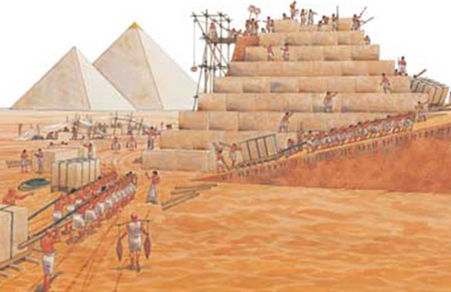

The History of Lies, Part I
“There are no facts, only interpretations.”
— Friedrich Nietzsche, The Will to Power
Throughout history, lies by people with power have defined what people decide to believe. For they only know as far as they are told. Along with this, people have used lies as survival, or even lied to themselves in order to see reality as they want it to be. Lies seem to be something instinctual to humans, as children do it before they’ve fully developed consciousness. With these ideas being played into history, it is true that certain lies weren’t even discovered until years upon years after the fact. So my thought is this: do we know history as it truly is, or do we know it by how the liars set it up to be known?
One of the earliest major lies in history was actually just a refuted interpretation of a Greek historian from the 5th century BC. Herodotus, a Greek historian who lived in a society heavily reliant on slavery, made a claim about the Great Pyramids of Egypt that they were built entirely by the work of slaves. This claim happens to have been made 2,000 years after they were built as well, and was believed for many years. However, by 19th and 20th century archaeology, this claim was proven to be very likely false. Truthfully, the pyramids were likely built by skilled workers and builders. This example itself shows that we not only shouldn’t instinctually trust claims that weren’t made first hand, but also that we should use present-day technology, rather than outdated references, before we make reasonable assumptions.

Another major lie in history, and unquestionably one of the biggest ones, was the lie of Christopher Columbus. The idea behind Columbus’s journey to find the Indies was actually surprisingly smart for the technology in 1492. However, it was extraordinarily wrong. And even after they began to realize that the Americas definitely weren’t the Indies, the name still stuck. Even today, people still refer to the Native Americans as Indians. But this wasn’t even Columbus’s biggest lie. Even though he died believing he found the Indies, he still said that he had discovered the Islands he found. This isn’t true either; they were discovered by those who inhabited them before he arrived. You would think people wouldn’t expect much out of the man who didn’t know where he was, but people even still believed that he discovered the Americas, years after his death. In fact, this is still a common misconception today. In reality, Leif Erikson was the first European explorer to discover the Americas.
After exploring these examples, we can see that even claimed experts make mistakes, and we cannot let them define what we believe. Along with this, we should question everything. For we cannot see history first-hand, but even if we learn it from those who have, we still cannot know the truth definitively. History may be set up by liars, so we must look deeper into it, rather than listening subserviently. Part II of this article will be released in the future. Thank you for reading Social Science 43, and have an astounding day.
Comments Section
Share your thoughts here!